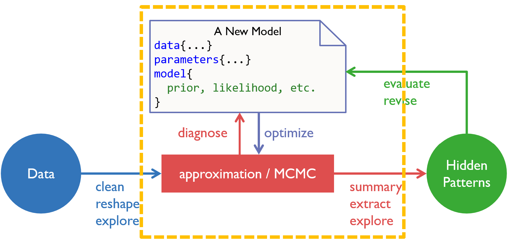
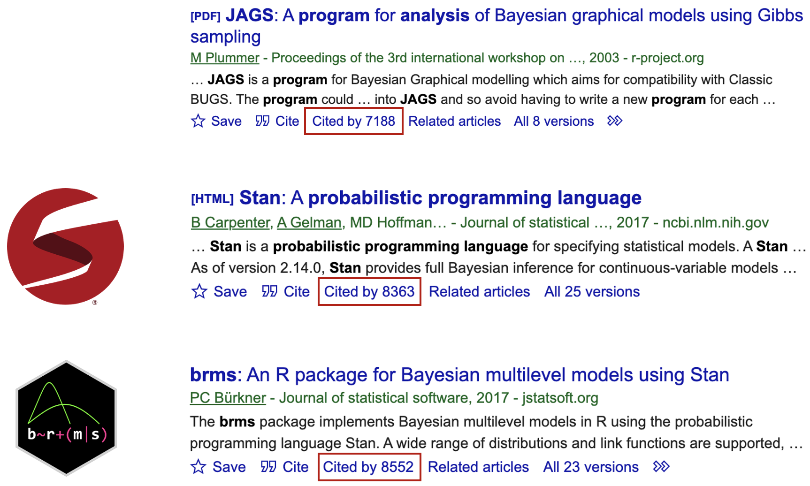
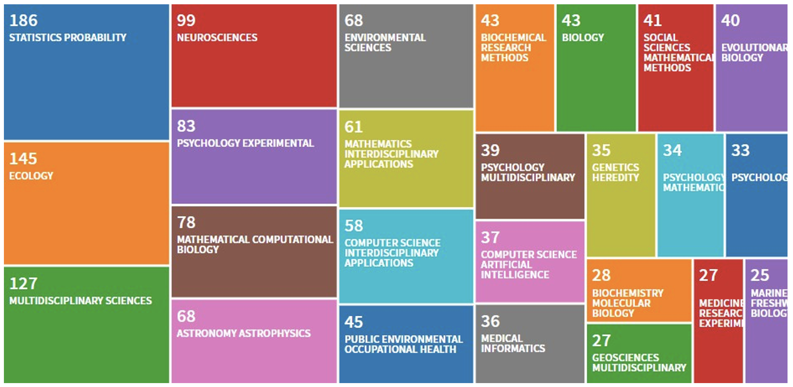
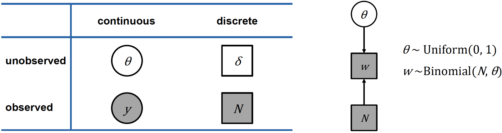
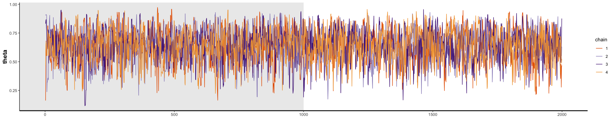
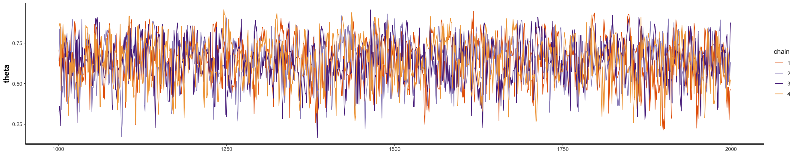
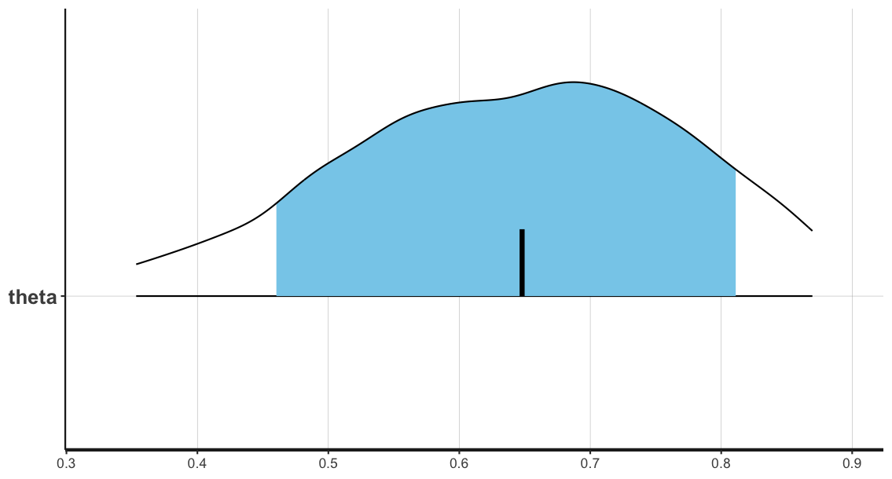
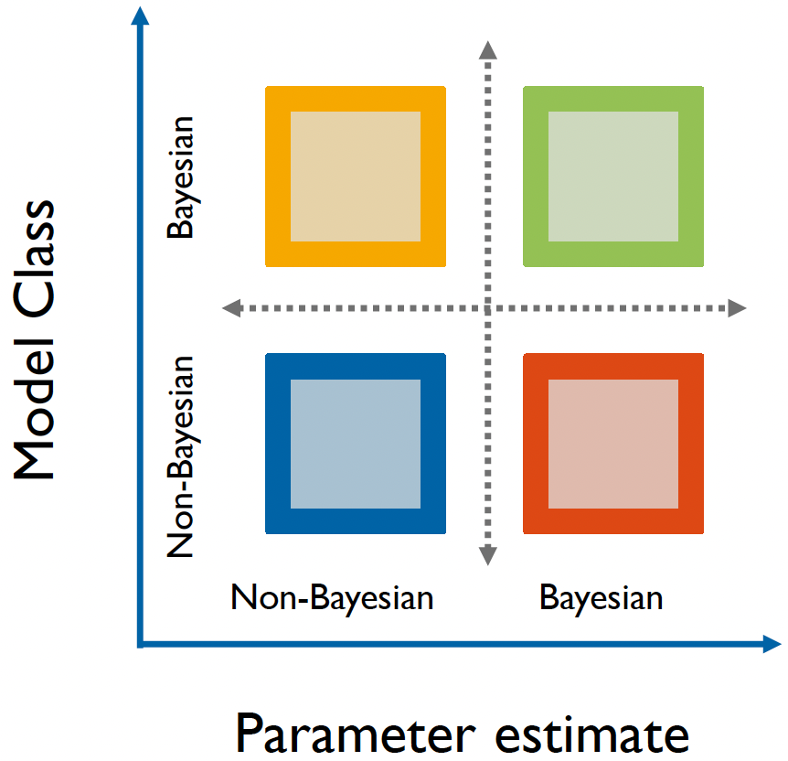

An introduction to the Stan programming language
Building our binomial model for the globe-tossing experiment in Stan
In our last workshop, we learned about model construction using McElreath’s framework1:
- Creating a data story to motivate our model
- Updating our model with observed data
- Evaluating and potentially revising our model
We then applied this framework to build a binomial model, where we:
- Defined our parameter of interest (\(θ\), the proportion of water)
- Specified our likelihood function (the binomial distribution)
- Implemented grid approximation to compute the posterior distribution (for 20 points)
While grid approximation proved effective for our single-parameter model, we discussed its limitations when dealing with multiple parameters. This led us to explore Markov chain Monte Carlo (MCMC) methods - a more scalable approach to sampling from posterior distributions in complex models.
We then learned how MCMC works, by combining random sampling (Monte Carlo) to explore the parameter space, and defined state transitions (Markov chains) to guide samples toward regions of high posterior probability. We also demonstrated this through a practical example using the Metropolis algorithm.
But how do we program these models?

We are now at the model construction stage in our analysis workflow.
What is Stan?
Stan2 is a probabilistic programming language designed specifically for statistical modeling and high-performance statistical computation. It was developed by Andrew Gelman, Bob Carpenter, and others at Columbia University, and named after Stanislaw Ulam, who pioneered Monte Carlo methods. It is a popular approach to statistical modeling, with the core Stan paper being cited over 8,300 citations, surpassing the older JAGS program (introduced in 2003, ~7,200 citations). The popularity of Stan has been furthered by the development of user-friendly interfaces, particularly the brms (Bayesian Regression Models using Stan) R package, which also introduced in 2017, has already accumulated over 8,500 citations.

Citations for JAGS, Stan and brms as of 1/1/2025.
Stan is widely used across many scientific disciplines. While its roots are in statistics and probability (and is most used among those in this field), Stan is also popular in experimental psychology and neuroscience.

Web of Science, retrieved 05/2021
But what is Stan and how it is implemented? Stan is it’s own programming language, like R or Python, but also has an interface with other platforms and softwares. You can even run Stan from the command line. In our case, we will specifically be using Stan with R, and so will rely upon the R interface to Stan RStan.
RStan acts as a bridge between R and Stan - it takes our Stan model code (which we write in a separate .stan file), compiles it into C++, runs the model, and returns the results in a format that’s easy to work with in R. The workflow typically involves:
- Writing our model code in Stan
- Preparing our data in
Rin a format Stan can understand - Using RStan functions to compile and run the model
- Accessing and analyzing the results back in
R
This separation between Stan and R is powerful because it lets us use Stan’s efficient computation engine while also being able to use R’s extensive tools for data manipulation and visualization.
The relationship between Stan and R. We feed the data from R into Stan, which then samples it using our Stan model. These samples are then fed back into R for analysis and inference.
The basic Stan model
Unlike R or Python, Stan is a block-based language, consisting of distinct sections of code that serve specific purposes in our model specification and computation. Here’s a breakdown of each block and its purpose:
data {
// ... read in external data...
}
parameters {
// ... parameters to be sampled by HMC ...
}
model {
// ... statistical/cognitive model ...
}data
This block declares and defines the data that your model will use.
- Here, you specify the input data that you’ll provide from
R. This includes the dimensions (number of observations) and the actual data values.
parameters
Here you declare the parameters that Stan will estimate.
- These are the unknown quantities in your model that you want to determine. Each parameter needs constraints on its possible values (like being positive or between 0 and 1).
model
This is where you specify your statistical model. This is how we link the data to the unknown parameter. It includes:
- Priors for your parameters
- The likelihood function relating parameters to data
- Any constraints or relationships between variables
Each block serves a specific purpose in the modeling pipeline, and understanding when to use each one is key to writing efficient Stan programs. There are other blocks - which we will cover in future workshops - but for now, it is enough to understand that these three blocks are the most important when writing your Stan model.
With this in mind, let’s revisit the globe tossing example from earlier.
Recall that we repeatedly tossed a globe containing an unknown parameter \(\theta\), representing some true proportion of water covering the globe.
We tossed the globe nine times, with the nine samples being:
\[W L W W W L W L W\]
where \(W\) indicates water and \(L\) indicates land.
So, we ultimately observed six \(W\) (water) observations and three \(L\) (land) observations.
This data can be more formally expressed using probability notation. If we let \(N\) represent the total number of trials, we can alternatively write:
\[W \sim \text{Binomial}(N, \theta)\]
Which is equivalent to writing the full probability mass function:
\[p(w | N,\theta) = \binom{N}{w}\theta^w(1-\theta)^{N-w}\]
Both expressions read as: “\(W\) is distributed as a binomial distribution, with number of trials \(N\), and success rate \(\theta\).”
This mathematical notation is particularly useful as it maps directly to how we’ll specify our model in Stan.
The tilde symbol (\(\sim\)) is used in both mathematical notation and in Stan code to denote that a variable follows a particular probability distribution.
Often in papers, you will also see the model graphed visually using a particular notation3.
On the left hand side below is a table describing this notation, which separates variables into two categories:
Whether they are continuous or discrete
Whether they are observed or unobserved
If the variable is observed, then it is shaded, and if unobserved, it is clear. If the variable is continuous, it is placed within a circle, if it is discrete, it is placed within a square.

Let’s apply this notation to our globe tossing model. Remember our variables:
- \(θ\) is a continuous, unobserved parameter representing the true proportion of water
- \(N\) is a discrete, observed value representing the number of tosses
- \(w\) is a discrete, observed value, representing the number of water observations
We can represent this in the graph (a Directed Acrylic Graph, DAG) shown above on the right, which shows the dependencies between variables using arrows:
- \(θ\) our unknown parameter is at the top, with a uniform prior distribution between 0 and 1
- \(N\) is simply the number of trials (tosses)
- \(w\) the number of water observations, follows a Binomial distribution with parameters \(N\) and \(θ\)
Remember that the shaded boxes indicate observed quantities (\(N\) and \(w\)), whilst unshaded circles indicate parameters we want to estimate (\(θ\)).
Ultimately, this graphical representation is useful when constructing our model, as it helps us visualize:
- The hierarchical structure of our model
- Which variables depend on others
- What we observe versus what we need to estimate
- The probability distributions involved
Programming a binomial model in Stan
Let’s now build our binomial model using the Stan programming language, and run the model through the RStudio interface.
Defining the data
Open the script binomial_globe_main.R, which is the R script that will run our Stan model.
At the top of the script, you can see the following code:
rm(list=ls(all=TRUE))
w <- 6
N <- 9
dataList <- list(w=w, N=N)Here we clear the workspace, assign our parameter values for the number of samples, N, and the number of water observations, w. Importantly, because we need to send this data to our Stan model, we convert the data into a data list using the list function.
Remember that stan models, when executed, get compiled to C++. Subsequently, Stan doesn’t understand R’s data frame structure. Data lists are simpler data structures that can be more easily translated between R and Stan’s C++ implementation.
Now that the data is properly defined and stored, the next stage is to write our Stan model.
Creating the Stan model
Open the binomial_globe_model.stan file. The model has already been created for you:
data {
int<lower=0> w;
int<lower=0> N;
}
parameters {
real<lower=0,upper=1> theta;
}
model {
// theta ~ uniform(0,1);
w ~ binomial(N, theta);
}Note that there is a blank line at the bottom of the Stan model code. This must be the case for all .stan files!
Remember that the three main blocks that we need in any Stan model are the data, parameters and model blocks. But what do each of these blocks mean and why do we choose the certain values that they are?
We use the data block to declare variables we’ll receive from R. Importantly, the names need to match between your R script and Stan model.
Within the block, there are a number of technical notes:
intspecifies that these are integer values (whole numbers)<lower=0>constrains these values to be non-negative, since you can’t have negative counts- Each line ends with a semicolon (
;) because Stan is based on C++, where statements must be terminated with semicolons
Ultimately, this code tells the Stan model to expect non-negative integers for our two data variables, \(w\) and \(N\).
We use the parameters block to declare the variables that we would like to estimate.
Again, within the block there are specifics that we must declare:
- We declare that the parameter, \(θ\), can take decimal values by adding
real(i.e., a continuous parameter) <lower=0,upper=1>constrains \(θ\) to be a probability between 0 and 1
This code tells the Stan model that we want to estimate \(θ\), which can take any decimal value constrained between 0 and 1.
The model block specifies our statistical model (i.e., our likelihood function).
w ~ binomial(N, theta) specifies that \(w\) follows a binomial distribution with:
- \(N\) trials
- \(θ\) probability of success (observing water)
- The \(\sim\) operator means “is distributed as”
So, this block simply translates to: “The number of water observations follows a binomial distribution according to the number of trials and the proportion of water on the globe”.
However, there is an additional line, which is optional in this specific case. Recall that in Bayesian inference, we need a prior (initial belief) for our parameters. In this case, we could (but don’t have to), set a uniform prior between 0 and 1. This reflects an implicit uniform prior which is uninformed. In other words, we have no prior evidence to suggest that the values of \(θ\) should be a certain value.
The reason why we do not have to specify our prior in this case is that when no prior is specified, Stan uses a uniform prior by default for bounded parameters. Ultimately, even in this scenario, priors should always be coded for clarity.
It is recommended to always check if your Stan model has been correctly written. To do this, click on the ‘Check’ tab on the top right of the main R window.
If there are no issues, the the following message will appear in the console:
> rstan:::rstudio_stanc("workshops/02.binomial_globe/_scripts/binomial_globe_model.stan")
workshops/02.binomial_globe/_scripts/binomial_globe_model.stan is syntactically correct.However, if for example, you removed a semi-colon from one of the lines, the following error message will appear:
> rstan:::rstudio_stanc("workshops/02.binomial_globe/_scripts/binomial_globe_model.stan")
Error in stanc(filename, allow_undefined = TRUE) : 0
Syntax error in 'string', line 11, column 0 to column 1, parsing error:
-------------------------------------------------
9: //p ~ uniform(0,1);
10: w ~ binomial(N, theta)
11: }
^
-------------------------------------------------
Ill-formed "~"-statement. Expected ";" or "T[" optional expression "," optional expression "];".You can then fix the error and re-check. Debugging in Stan will be covered in more detail in Workshop 9 of the course.
Running the Stan model in R
So now we have both defined our data and created the Stan model, we can now run the model through our R script. But, this is not as straight-forward as simply pressing ‘Run’. We need to set-up our R script to run the model according to our specifications.
Here is the relevant section of the binomial_globe_main.R script:
#### Running Stan ####
library(rstan)
rstan_options(auto_write = TRUE)
options(mc.cores = 4)
modelFile <- '_scripts/binomial_globe_model.stan'
nIter <- 2000
nChains <- 4
nWarmup <- floor(nIter/2)
nThin <- 1
cat("Estimating", modelFile, "model... \n")
startTime = Sys.time(); print(startTime)
cat("Calling", nChains, "simulations in Stan... \n")
fit_globe <- rstan::stan(modelFile,
data = dataList,
chains = nChains,
iter = nIter,
warmup = nWarmup,
thin = nThin,
init = "random",
seed = 1450154626)
cat("Finishing", modelFile, "model simulation ... \n")
endTime = Sys.time(); print(endTime)
cat("It took",as.character.Date(endTime - startTime), "\n")If running the script, you should double check if rstan is installed. You can do this by:
- Run
installed.packages()and look forrstan - Simply try
library(rstan)- if it errors, it’s not installed
If you do not have rstan installed, please follow the RStan Getting Started guide or the renv guide in the ‘Course Overview’ page on this website.
The first section mainly specifies our Stan environment. It loads the rstan package and using auto_write = TRUE saves compiled Stan programs to avoid recompilation. Setting mc.cores controls the processing power for the Stan process. Setting this to 4 enables parallel processing across 4 CPU cores for faster sampling.
You can check how many cores are available by running parallel::detectCores(). For example:
> parallel::detectCores()
[1] 12Generally, it’s recommended to use 1 core per chain. This allows for each chain to be ran by each separate CPU concurrently.
The next section defines our MCMC sampling strategy. After using modelFile to specify the path to our .stan model file we set:
nIter- total iterations per chain (2000) i.e., the number of visits that the MCMC robot makes. We need enough iterations to explore the parameter space thoroughly, and 2000 is often sufficient for simple models like oursnChains- number of parallel chains for convergence diagnostics (4). Multiple chains help assess convergence. If chains reach similar distributions from different starting points, then we’re more confident in our results. Four chains is standard practice - enough to assess convergence without excessive computationnWarmup- discards first X iterations as burn-in period (1000). The initial samples might be poor if chains start in certain regions of the parameter space. Discarding them ensures we only use samples from when chains have “settled”.nThinkeeps every sample (no thinning). Thinning means keeping every nth sample, which is useful if samples are highly autocorrelated. Ours is a simple model, so we don’t need to thin.
We simply record the start and the end time to determine how long the model took to run. This is useful for adjusting our settings if the runtime is too long.
We then run our model, through the stan()function and save its output to fit_globe. When we run this function, we’re doing several important things:
First, the function reads our Stan model file, compiles it to C++ code, and runs the MCMC sampling process using all the parameters we’ve specified - the number of chains, iterations, warm-up period, and so on.
Two additional settings are the
initwhich defines the initial starting point (which is random) and theseed. Theseedif set, means that the results are reproducible, but only within our own machine.We assign the output to
fit_globe. Because the output is complex, not a collection of numbers or basic results - we create astanfitobject, which is a specializedRobject designed specifically for Stan model outputs. This object is like a container that holds everything about our model’s results. It contains all the posterior samples for our parameter \(θ\), but it also includes diagnostic information about how well the sampling worked, metrics about whether our chains converged properly, details about the model specification, and various other metadata about the sampling process.
Running the model and examining the output
Let’s now run the Stan model. You can do this by highlighting the code included in the previous code block in the R script.
When it is running, you should see the following output in the console:
starting worker pid=56934 on localhost:11017 at 12:53:01.273
starting worker pid=56947 on localhost:11017 at 12:53:01.551
starting worker pid=56960 on localhost:11017 at 12:53:01.802
starting worker pid=56973 on localhost:11017 at 12:53:02.058
SAMPLING FOR MODEL 'anon_model' NOW (CHAIN 1).
Chain 1:
Chain 1: Gradient evaluation took 8e-06 seconds
Chain 1: 1000 transitions using 10 leapfrog steps per transition would take 0.08 seconds.
Chain 1: Adjust your expectations accordingly!
Chain 1:
Chain 1:
Chain 1: Iteration: 1 / 2000 [ 0%] (Warmup)
Chain 1: Iteration: 200 / 2000 [ 10%] (Warmup)
Chain 1: Iteration: 400 / 2000 [ 20%] (Warmup)
Chain 1: Iteration: 600 / 2000 [ 30%] (Warmup)
Chain 1: Iteration: 800 / 2000 [ 40%] (Warmup)
Chain 1: Iteration: 1000 / 2000 [ 50%] (Warmup)
Chain 1: Iteration: 1001 / 2000 [ 50%] (Sampling)
Chain 1: Iteration: 1200 / 2000 [ 60%] (Sampling)
Chain 1: Iteration: 1400 / 2000 [ 70%] (Sampling)
Chain 1: Iteration: 1600 / 2000 [ 80%] (Sampling)
Chain 1: Iteration: 1800 / 2000 [ 90%] (Sampling)
Chain 1: Iteration: 2000 / 2000 [100%] (Sampling)
Chain 1:
Chain 1: Elapsed Time: 0.007 seconds (Warm-up)
Chain 1: 0.007 seconds (Sampling)
Chain 1: 0.014 seconds (Total)
Chain 1: This visually shows the MCMC chains at work. We can see that the first 1000 samples are labelled as ‘Warmup’ and also how long the process takes.
The model upon it’s first run will take around 1-2 minutes, depending on the processing power of your machine. However, if you run it again it will take significantly shorter. This is because we have set the model to avoid recompilation through rstan_options(auto_write = TRUE)
Once the model has finished running, we can examine the output. What exactly is the output? What are the data generated? There’s a lot to cover in that regard, so for now we will just focus on some basic checks.
print(fit_globe)
plot_trace_excl_warm_up <- stan_trace(fit_globe, pars = 'theta', inc_warmup = F)
plot_trace_incl_warm_up <- stan_trace(fit_globe, pars = 'theta', inc_warmup = T)
plot_dens_cmb <- stan_dens(fit_globe, separate_chains = F, fill = 'skyblue')
plot_dens_sep <- stan_dens(fit_globe, separate_chains = T)If we print fit_globe we get the following:
> print(fit_globe)
Inference for Stan model: anon_model.
4 chains, each with iter=2000; warmup=1000; thin=1;
post-warmup draws per chain=1000, total post-warmup draws=4000.
mean se_mean sd 2.5% 25% 50% 75% 97.5% n_eff Rhat
theta 0.64 0.00 0.14 0.35 0.55 0.65 0.74 0.87 1483 1
lp__ -7.71 0.02 0.69 -9.78 -7.86 -7.44 -7.27 -7.21 1886 1
Samples were drawn using NUTS(diag_e) at Tue Dec 24 13:18:04 2024.
For each parameter, n_eff is a crude measure of effective sample size,
and Rhat is the potential scale reduction factor on split chains (at
convergence, Rhat=1).This output gives us key information about our binomial model’s parameter estimation. Let’s break down what these numbers mean:
For our parameter of interest, \(θ\), which represents the proportion of water in our globe-tossing example:
- The posterior mean is 0.64, suggesting it is most likely that 64% of the globe is covered in water
- The 95% credible interval ranges from 0.35 to 0.87
- The median (50th percentile) is 0.65, very close to our mean
We can also see some results for the model diagnostics:
Effective Sample Size (n_eff): This tells us how many truly independent samples we got from our model. Even though we have 4000 total samples, they aren’t all completely independent from each other. The
n_effof 1483 means we effectively have about 1,483 independent samples, which is a good value; a general rule of thumb is that we want this to be above 1000.Rhat: Rhat (the Gelman-Rubin statistic4) helps us check if our chains are converging to the same distribution. 1 is the ideal value, values above 1.1 are problematic.
These results tell us we have a well-behaved model that’s giving us reliable estimates of \(θ\). The relatively tight credible interval also gives us a good sense of the uncertainty in our estimate.
We can also visually examine the samples by plotting them. Checking the MCMC traces is important for determining whether the traces are mixing well and have converged. A good trace plot should look like a “fuzzy caterpillar” - showing random fluctuations around a stable mean value.
You can see the MCMC traceplots for the four chains below, both with and without the burn-in period. In the R script, just highlight and run the following code (i.e., to plot the traces do not assign it to a variable).
stan_trace(fit_globe, pars = 'theta', inc_warmup = F)
stan_trace(fit_globe, pars = 'theta', inc_warmup = TRUE)

Our traceplots suggest that the chains have performed well. The four chains show good mixing and overlap, indicating they’re exploring the same regions of the parameter space independently. After the warmup period, you can see that the chains are sampling consistently around the posterior mean of 0.64.
To more clearly see our samples, we can instead plot them as a histogram, showing the posterior density distribution for our parameter \(\theta\) estimated from our MCMC sampling:
# highlight and run the following code in the script
stan_dens(fit_globe, separate_chains = FALSE, fill = 'skyblue')
stan_dens(fit_globe, separate_chains = TRUE)
The posterior mean is highlighted with a black bar.
In this case, the confidence (blue shaded region) and outer levels (black lines) are set at the default values of 80% and 95% respectively:
ci_level: 0.8 (80% intervals)
outer_level: 0.95 (95% intervals)What is a Bayesian model?
What we have done in this workshop is to estimate the value of some unknown parameter given some experimental data, using a Bayesian approach.
However, if one was to say that they are working on “Bayesian models” of cognition, what does that mean? Bayesian modeling is a wider semantic construct than many realize, encompassing both how we structure our models and how we estimate their parameters. This distinction is crucial for understanding the different types of Bayesian approaches in statistical modeling and cognitive science.
The term “Bayesian” can actually refer to two distinct aspects of modeling: the model’s structure and the method used for parameter estimation.
- The model structure determines whether parameters are treated as random variables with probability distributions (Bayesian) or as fixed, unknown constants (non-Bayesian).
- Meanwhile, parameter estimation methods can either produce full probability distributions through Bayesian inference or provide point estimates through non-Bayesian methods (e.g., Maximum Likelihood Estimation).

A Bayesian matrix of modeling approaches.
This creates an interesting matrix of possibilities in modeling approaches. For instance, consider the Bayesian Brain Hypothesis5, a prominent theory in cognitive science. The theory (in a one-sentence nutshell) proposes that the brain maintains probabilistic models of the world, continuously updating them with new sensory information.
This is inherently Bayesian in structure because it assumes the brain maintains and updates probability distributions.
However, when researchers implement these models, they might use either Bayesian estimation methods (like MCMC sampling) or non-Bayesian approaches (like maximum likelihood estimation). On the graph, this could be represented by the yellow or green square.
On-the-other-hand, our globe-tossing example consists of the model generating the data (binomial model using coin flips/globe tosses) which is frequentist, but we’re using Bayesian methods to estimate parameters.
- On the graph, this would be represented by the orange square.
Hopefully this matrix helps to clarify what we mean when we say we’re working with Bayesian models, and about which aspects of our approach are Bayesian!
Footnotes
McElreath, R. (2020). Statistical Rethinking: A Bayesian Course with Examples in R and Stan, 2nd Ed. CRC Press.↩︎
Carpenter, B., Gelman, A., Hoffman, M. D., Lee, D., Goodrich, B., Betancourt, M., … & Riddell, A. (2017). Stan: A probabilistic programming language. Journal of statistical software, 76.↩︎
Lee, M. D., & Wagenmakers, E. J. (2014). Bayesian cognitive modeling: A practical course. Cambridge university press.↩︎
Gelman, A., & Rubin, D. B. (1992). Inference from iterative simulation using multiple sequences. Statistical science, 7(4), 457-472.↩︎
Colombo, M., & Seriès, P. (2012). Bayes in the brain—on Bayesian modelling in neuroscience. The British journal for the philosophy of science.↩︎